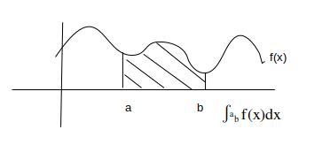
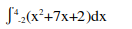

Intergration is basically backwards differentiation. We must always remember to add a +c on the end.
When intergrating, we will not know what the +c value is as it dissapears when differentiation.
Intergrating is shown by using ∫f(x)dx
There are many methods to do this: GDA, integration by parts, integration by substituion ect..
GDA is the method we learn in Year 1.
GDA
GDA is Guess, Differentiate, Answer. It is a method to guess what we think the intergral is, differentiate and the adjust.
Example:
1) Find ∫(x^2 +4x+3)dx
G: x^3 + x^2 + 3x + c -The powers will increase
D: 3x^2 + 2x + 3 + x -We see that the first two terms are not equal to the original equation
A: (1/3)x^3 + 2x^2 + 3x + c -Multiply by what makes the original term.
Definite Integrals
This method is about finding the area under a line, between two points.
Example:
2) Find:
x^2 +7x + 2
G: x^3 + x^2 + 2x -We start off intergrating it, using GDA
D: 3x^2 + 2x + 2
A: [(1/3)x^3 + (7/2)x^2 + 2x + c ](Between 4 and -2)
We take the largest value (always on top) and sub it into the question, the take away the equation with -2 in
so: ((1/3)(4)^3 + (7/2)(4)^2 + 2(4)) - ((1/3)(-2)^3 + (7/2)(-2)^2 + 2(-2))
Therefore the area is 78. You can check this on the calculator
When finding the area between two line equations, it is ∫top-bottom dx between the values you want to find